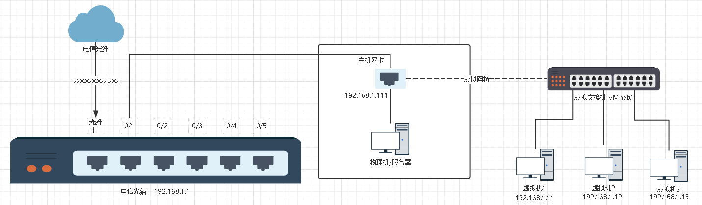
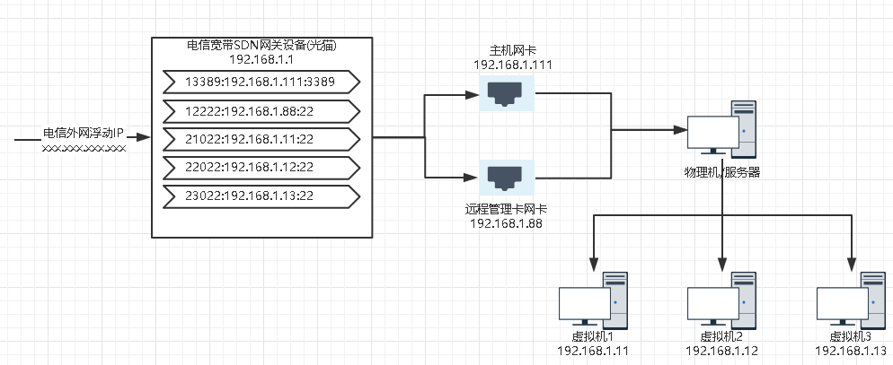
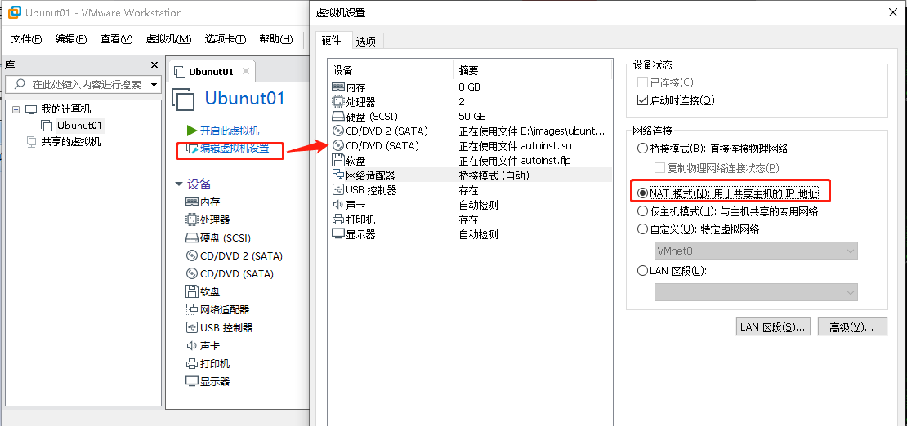
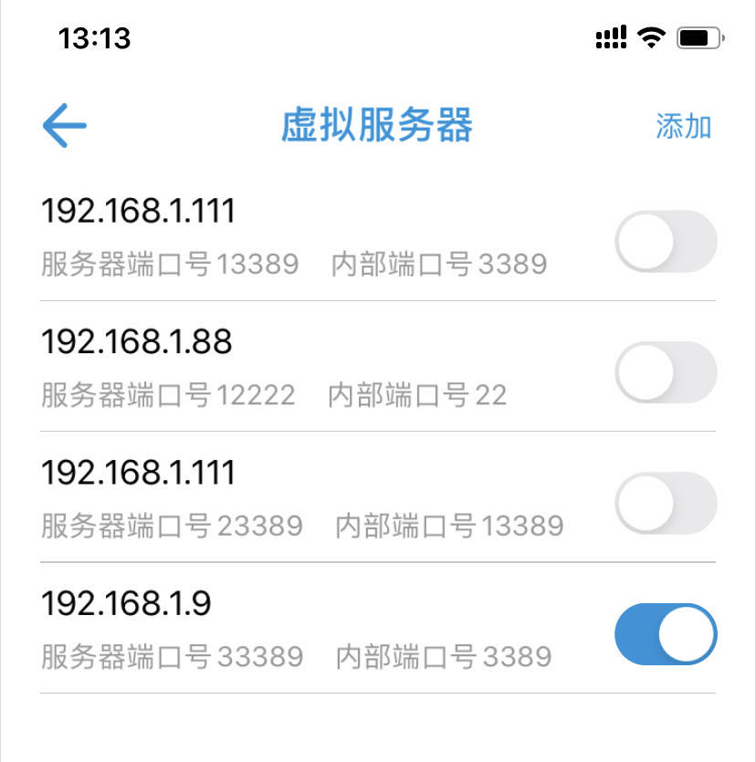

vmware workstation启动ubuntu桌面虚拟机
文章目录
Vmware Workstations
vmware workstations是vmware公司虚拟化三剑客中的其中之一，vmware公司的虚拟化产品有三个版本分别是workstation、GSX server、ESX server。
workstation：单机的桌面虚拟化版本，适合个人开发者使用，需要操作系统的支持。
GSX server：工作组级的虚拟化版本，适合小型虚拟化场景，也需要操作系统支持，与workstations的优势在于，可以进行远程管理。
ESX Server：企业级的虚拟化解决方案，适合大规模虚拟化场景，不需要操作系统支持，直接安装在裸机中，能够充分挖掘利用物理机资源。
Vmware workstations安装
1、官网下载最新版本的vmware workstations，目前我安装的是15.5 pro版本
2、下载后进行安装，一路下一步即可，中间会需要许可证密钥，可以网上找一个license。经济条件允许情况下，请支持正版。
Vmware Workstations网络配置
默认workstations有三种网络配置，分别是主机模式、Nat模式、桥接模式。
网络模式
三种网络模式的讲述有很多文章很详细地进行了讲解，这里不多赘述，感兴趣可以自己进行查询。
主机模式
主机模式整体结构就是通过主机的虚拟网卡VMware Network Adapter VMnet1连接虚拟交换机VMnet1，从而达到主机与虚拟机通信的目的。主机模式主要是将虚拟机与外网隔开，使得虚拟机成为一个独立的系统，只与主机进行通信。
Nat模式
Nat模式是在内网ip地址紧缺，但是又希望虚拟机能够进行联网，NAT模式通过主机的虚拟网卡VMware Network Adapter VMnet8连接虚拟交换机VMnet8来达到主机和虚拟机通信的目的。而虚拟的NAT设备实现虚拟机联网的目的以及实现端口映射、内网穿透。
桥接模式
桥接模式是通过一个虚拟网桥将主机网卡与虚拟交换机进行连接，所有的桥接模式下的虚拟机都连接到虚拟交换机上，并且虚拟机的ip需要与主机的ip是同一网段、并且子网掩码、网关、dns都一致。

网络模式选择
因为博主家中的宽带猫是电信最新的SDN网关设备，而且vmware workstations是在一台服务器上部署，这台服务器有远程服务卡。这台服务器主机是windows系统。因为服务器还是比较吵，不会一直开着。所以就希望整体的网络架构能够支持以下功能。
1、可以利用服务器的远程服务卡网卡的内网ip和22端口与电信宽带的外网ip和某口端口进行端口映射，也就是内网穿透。这样就可以直接进行远程开机。
2、还是利用服务器的物理网卡ip与3389端口与电信宽带的外网ip和某个端口进行端口映射，还是内网穿透。这样也就可以进行远程连接。
以上的两点都可以通过电信的SDN网关设备中的虚拟服务器实现。也就是内网穿透。如果本身设备的不支持，可以通过路由器中内网穿透功能或者类似花生壳的软件实现。
3、除了以上两点，我还希望能够服务器启动的时候就能启动vmware workstation中的所有虚拟机，并且能够在外网中访问。在这点上就设计到vmware workstations的网络配置了。workstations中的三种网络模式中主机模式肯定就不行了。剩下的桥接模式和Nat模式都可以实现我的第三点需求。
Nat模式
1、通过NAT模式实现虚拟机能够联网。
2、通过NAT模式下的端口映射实现能够通过物理服务器ip+端口连接到虚拟机的ip+端口。
3、再通过电信宽带外网的ip+端口映射到物理服务器ip+端口(光猫的虚拟服务器功能或者路由器的内网穿透)。
4、通过以上4步就可以访问任何一个虚拟机的相关服务。
整体结构见下图：
桥接模式
1、通过桥接实现虚拟机能够联网。
2、通过电信宽带外网的ip+端口映射到虚拟机的ip+端口(光猫的虚拟服务器功能或者路由器的内网穿透)。
3、通过以上三步就可以访问任何一个虚拟机的相关服务。
整体结构见下图：

网络模式配置
vmware workstations中可以通过虚拟网络编辑器来配置网络模式。如下图：
NAT模式配置
1、选择NAT网络模式，并配置NAT设置、DHCP配置，子网和子网掩码可以按照默认的。
2、NAT设置中，配置网关、以及端口转发(如果有需要)，也就是NAT模式下的端口映射。
3、DHCP配置中，配置ip段。
4、修改虚拟机网络设置，选择NAT模式。

5、启动虚拟机后，登入并测试是否可以联网以及是否可以通过外网进行登入。
5.1、通过物理服务器进行ssh登入，并且ping baidu

5.2、通过与物理服务器在同一个局域网的电脑通过物理服务器的ip+13389远程连接该ubuntu。因为上面2中已经加了13389->192.168.182.128:3389的映射。
5.3、通过外网电脑通过光猫进行内网穿透后远程连接虚拟机。
至此，通过NAT模式我们可以在外部网络访问家中服务器或者电脑中vmware workstations虚拟化出来的虚拟机，可以让工作更加方便一些。
桥接模式配置
桥接模式是最简单的，无需配置虚拟网络编辑器。只需要修改虚拟机为桥接模式即可
1、修改虚拟机网络设置，选择桥接模式。
2、启动虚拟机后，桥接模式的虚拟机ip是和物理服务器在同一个网段，登入并测试是否可以联网以及是否可以通过外网进行登入。
2.1、通过物理服务器进行ssh登入，并且ping baidu
2.2、通过与物理服务器在同一个局域网的电脑直接通过虚拟机的ip+3389远程连接该ubuntu。
2.3、通过外网电脑通过光猫进行内网穿透后远程连接虚拟机。

至此，通过桥接模式我们可以在外部网络访问家中服务器或者电脑中vmware workstations虚拟化出来的虚拟机，可以让工作更加方便一些。
总结
总的来说，NAT和桥接模式。
如果本身家中设备不多，ip够用，桥接模式更简单，只需要配置光猫或者路由器进行内网穿透即可。
如果ip地址不够用，那NAT绝对是一种更好地方式。缺点就是如果要外部访问内部服务，则NAT设备和光猫或者路由器两者都需要配置端口转发来实现内网穿透。
虚拟机
配置静态ip
1、以桥接模式为例，静态ip属于服务器所在子网。
root@ubuntu:~# sudo vim /etc/network/interfaces
# interfaces(5) file used by ifup(8) and ifdown(8)
auto lo
iface lo inet loopback
auto ens33
iface ens33 inet static # 使用静态ip
address 192.168.1.10 # 静态ip地址
netmask 255.255.255.0 # 子网掩码
gateway 192.168.1.1 # 网关
dns-nameserver 192.168.1.12、重启网络
root@ubuntu:~# sudo /etc/init.d/networking restart
[ ok ] Restarting networking (via systemctl): networking.service.3、测试连接
root@ubuntu:~# ping www.baidu.com
PING www.a.shifen.com (180.101.49.12) 56(84) bytes of data.
64 bytes from 180.101.49.12: icmp_seq=1 ttl=53 time=10.2 ms
64 bytes from 180.101.49.12: icmp_seq=2 ttl=53 time=8.66 ms
64 bytes from 180.101.49.12: icmp_seq=3 ttl=53 time=9.30 ms
64 bytes from 180.101.49.12: icmp_seq=4 ttl=53 time=8.47 ms虚拟机开机自启动
为了避免每次通过远程管理卡启动物理服务器后，还需要远程连接到服务器来启动虚拟机。所以我们需要将虚拟机进行开机自启动。
1、控制面板->管理工具->任务计划程序 ->创建任务

2、startvm.bat内容，需要注意如果路径中有中文，文件需要另存为ANSI编码的文件。
vmrun -T ws start "F:\vmware\Ubuntu 64 位.vmx"文章作者 zbbkeepgoing
上次更新 2020-06-28
许可协议 MIT